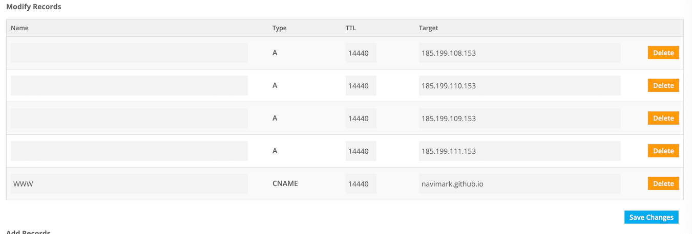

🎉🎉咱也有顶级域名了！
本文将记录 GitHub Pages 绑定域名的过程
域名申请
Freenom 是世界上第一个也是唯一的免费域名提供商，但是这家好像是不允许来自大陆的注册和续期了，而且新注册的也需要科学上网才行，所以下面的操作需要首先“云游”到外国，并且在填写注册所需的各种资料时要表现得像一个真人，以免被 Freenom 误判为机器人而申请失败。
- 首先开启全局代理。一开始是打算为
freenom.com制定规则，避免xxxx，后来担心里面的 js、啥啥啥的有问题，就开全局了 - 打开 Chrome 浏览器，新创建一个无痕窗口访问
https://www.freenom.com，输入意向的完整域名后点击 Check Availability，如果可用将如图展示： - 点击 Checkout 后可以选择生效期，在 Period 中选择
12 Months @ FREE然后 Continue - 接下来填写邮箱地址（这个地址将成为
Freenom账号登录名），既然已经云游到国外了，这里最好是填国外的邮箱服务商的邮箱地址吧，如 gmail.com 。填好后点击 Verify My Email Adress，然后到邮箱中去点击验证链接 - 点击验证链接后，需要填入地址信息，这里的地址需要“云游”服务器的 IP 地址所在的地址。
DNS 解析
进入域名列表后，依次点击选定域名的 Manage Domins -> Manage Freenom DNS，然后填入如下规则

其中 IP 地址的由来：Managing a custom domain for your GitHub Pages site
GitHub Pages 设置
- 进入 GitHub 上托管 Pages 仓库的 Setting 页面，找到 GitHub Pages 设置区域，在 Custom domain 中填入域名，注意不需要 http(s) 前缀，然后点保存。保存完毕后仓库的根目录下会新增加一个
CNAME文件，内容为alphabyte.tk，这个CNAME指导 github 是否要定向到alphabyte.tk - 随着 DNS 服务器的递归索引的建立，等上几分钟或者几个小时，通过
https://alphabyte.tk/或https://www.alphabyte.tk/就能访问到博客啦。可以在命令行执行dig alphabyte.tk命令来检测 DNS 解析是否生效。
Hexo 设置
由于每次发表文章部署 Pages 时，Pages 主页的内容都是被全量清除并覆盖的，CNAME 文件也将被清除，所以肯定需要让 hexo 能够管理这个 CNAME 文件的，所以还需要对 hexo 进行一些处理：在 hexo 主题的 source 目录下创建一个 CNAME 文本文件，内容为 alphabyte.tk，然后在 _config.yml 中设置CNAME 跳过渲染 skip_render: CNAME，这样每次部署博客时，CNAME 将会被拷贝到网站根目录。
接下来
- Freenom 的 DNS 解析服务在大陆访问的延迟比较高，可以考虑接入其他更专业的第三方 DNS 服务商
- 由于有了顶级私有域名，现在可以定制专属 404 页面了
- 提交给百度收录
本博客所有文章除特别声明外，均采用 CC BY-SA 3.0协议 。转载请注明出处！